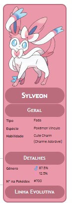

Sylveon, o fada
Sylveon (em japonês: ニンフィア Nymphia) é um Pokémon tipo Fada. Ele é uma das evoluções de Eevee. Um Eevee evolui para Sylveon quando chega num certo ponto de amizade com o seu treinador e também aprender um movimento do tipo Fada.
Sylveon é um Pokémon mamífero coberto principalmente em pele de cor creme pálido, com os pés rosados, orelhas e cauda. Há dois arco e adornos lenço sobre eles, um no pescoço e um na orelha esquerda. Os arcos são creme claro com centros rosadas, enquanto os lenços são creme claro com dicas rosado e azul. Eles têm quatro pernas curtas de três dedos visíveis em cada pé, seus olhos são azuis.
Diferenças de Genero
Não ha diferenças de genero no Sylveon
Habilidades Especiais
Glaceon pode usar qualquer ataque que Eevee sabe, com a adição dos movimentos do tipo normal. Como um Pokémon totalmente evoluído, Glaceon pode aprender o Hyper Beam e Giga Impact. Além disso, ele também pode congelar sua pele para torná-la levantar-se como agulhas - semelhante ao seu parente evolutivo, Jolteon. Ao controlar o seu calor do corpo, ela também pode congelar a atmosfera em torno dele para fazer uma enxurrada de diamante de poeira.
No Anime
Sylveon está confirmado em aparecer no Curtas do Pikachu do Filme 16.
